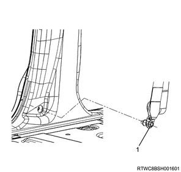
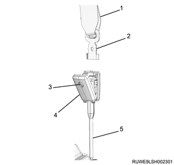

Seat belt with pretensioner installation (All models)
1. Seat belt with pretensioner installation
1. Remove the sill plate from the floor.
Note
- Remove the front sill plate.

- Front sill plate
Note
- Remove the rear sill plate.

- Rear sill plate
2. Remove the front door finisher from the body.
3. Remove the rear door finisher from the body.
Note
- The following applies to models with pretensioners.
4. Remove the seat belt lower anchor bolt from the center pillar.

- Seat belt lower anchor bolt
5. Remove the center pillar lower trim cover from the center pillar.

- Center pillar lower trim cover
Note
- The following applies to models with lap pretensioners.
6. Remove the tongue side seat belt from the lap pretensioner.
Note
- Loosen the screw and open the cover.
- Remove the tongue plate from the lap pretensioner.

- Seat belt
- Tongue plate
- Screw
- Cover
- Lap pretensioner
7. Remove the center pillar lower trim cover from the center pillar.
Note
- Move the center pillar lower trim cover upward and remove the lap pretensioner from the bezel rubber.

- Bezel rubber
8. Remove the lap pretensioner from the lap pretensioner bracket.
Note
- Disconnect the harness connector.
- Remove the bolt.
- Lap pretensioner
9. Remove the lap pretensioner bracket from the center pillar.
- Lap pretensioner bracket
Note
- The following applies to all models.
10. Remove the adjuster cover from the center pillar.
11. Remove the seat belt upper anchor bolt from the adjuster.

- Adjuster cover
- Seat belt upper anchor bolt
Note
- The following applies to models with pretensioners.
12. Remove the front tongue side seat belt from the center pillar.
Note
- Disconnect the harness connector.
- Remove the 2 bolts.
- Lower bolt
- Upper bolt
- Front tongue side seat belt
Note
- The following applies to models with lap pretensioners.
13. Remove the front tongue side seat belt from the center pillar.
Note
- Disconnect the harness connector.
- Remove the 2 bolts.
- Upper bolt
- Front tongue side seat belt
- Lower bolt
2. SRS control unit setting
1. Reactivate the SRS function.
Note
- Install the SRS fuse to the fuse relay box or connect the battery ground cable to the battery.
- Turn the ignition switch on, and confirm that the SRS airbag warning light turns off after blinking 7 times.